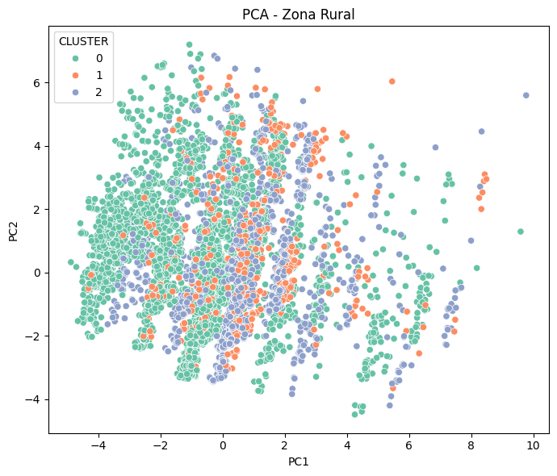
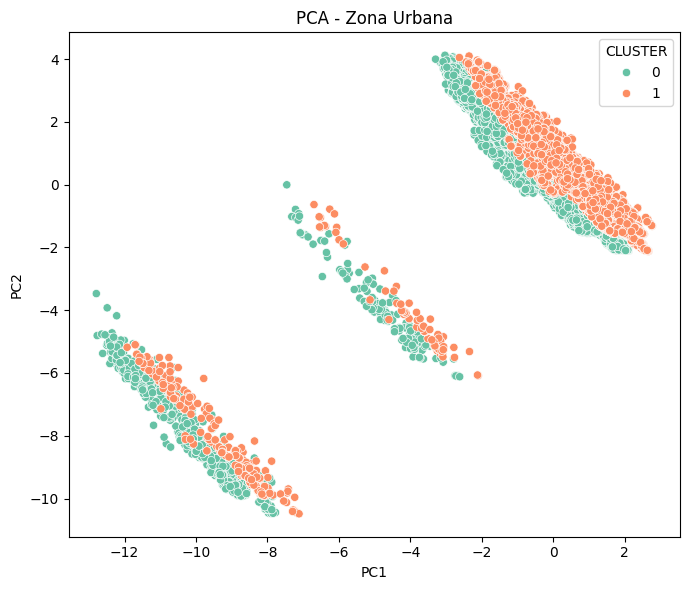
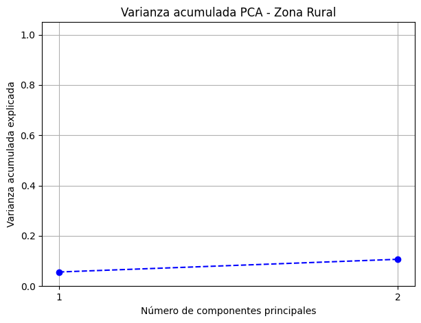
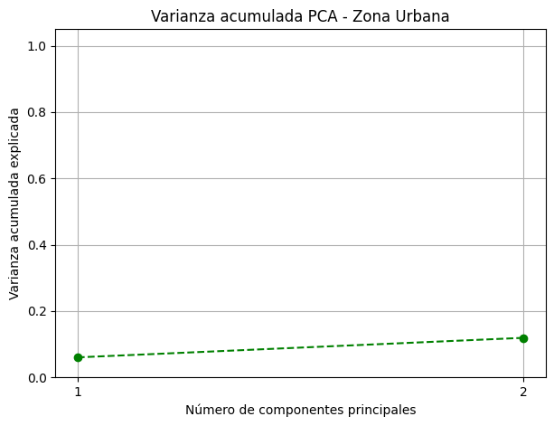

Análisis de Componentes Principales Para Clusteres#
!pip install pyreadstat
import pandas as pd
import numpy as np
import seaborn as sns
from scipy import stats
import matplotlib.pyplot as plt
import matplotlib.cm as cm
import plotly.express as px
import plotly.graph_objects as go
from plotly.subplots import make_subplots
import pyreadstat
from IPython.core.display import display, HTML
import plotly.graph_objects as go
from plotly.subplots import make_subplots
import json
import os
import requests
import plotly.io as pio
pio.renderers.default = "notebook" # Para Jupyter Notebook
from sklearn.model_selection import train_test_split
from sklearn.preprocessing import LabelEncoder, OneHotEncoder
from sklearn.compose import ColumnTransformer
from sklearn.pipeline import Pipeline
from sklearn.linear_model import LogisticRegression
from sklearn.ensemble import RandomForestClassifier
from sklearn.preprocessing import OrdinalEncoder
from sklearn.metrics import accuracy_score, f1_score, precision_score, recall_score, confusion_matrix, classification_report
import plotly.graph_objects as go
from plotly.subplots import make_subplots
import plotly.io as pio
# Set the renderer explicitly
pio.renderers.default = 'notebook'
from sklearn.preprocessing import StandardScaler, OneHotEncoder
from sklearn.cluster import KMeans
from sklearn.pipeline import Pipeline
from sklearn.compose import ColumnTransformer
from sklearn.decomposition import PCA
from sklearn.metrics import silhouette_score
import geopandas as gpd
import unicodedata
from sklearn.decomposition import PCA
C:\Users\henry\AppData\Local\Temp\ipykernel_13888\1063230837.py:11: DeprecationWarning:
Importing display from IPython.core.display is deprecated since IPython 7.14, please import from IPython display
data_path = 'C:/Users/henry/Documents/jbook/Cacervix/datos/'
data = pd.read_excel(data_path + 'data_final.xlsx')
rural_data = pd.read_excel(data_path + "rural_data_cluster_general_k3.xlsx")
urbana_data = pd.read_excel(data_path + "urban_data_cluster_general_k2.xlsx")
urbana_data
| DEPARTAMENTO | DEPARTAMENTO DE RESIDENCIA | MUNICIPIO | MUNICIPIO DE RESIDENCIA | AÑO | MES | SEX | ESTADO_CIVIL | NIVEL_EDUCACION | GRUPO_ETARIO | ... | C_PAT1_DESCRIPCION | C_ANT3_DESCRIPCION | C_ANT2_DESCRIPCION | C_ANT1_DESCRIPCION | C_DIR1_DESCRIPCION | Total Mujeres | PIB | TIENE_COMORBILIDAD | NUM_COMORBILIDADES | CLUSTER | |
|---|---|---|---|---|---|---|---|---|---|---|---|---|---|---|---|---|---|---|---|---|---|
| 0 | META | META | GRANADA | GRANADA | 1985 | 1 | Femenino | Soltero | Primaria | 70-74 | ... | No patología | No patología | No patología | No patología | No patología | 192905 | 74.126 | False | 0 | 1 |
| 1 | BOYACÁ | BOYACÁ | TUNJA | TUNJA | 1985 | 1 | Femenino | Soltero | Primaria | 60-64 | ... | No patología | No patología | No patología | No patología | No patología | 546762 | 149.629 | False | 0 | 1 |
| 2 | HUILA | HUILA | NEIVA | NEIVA | 1985 | 1 | Femenino | Casado | Primaria | 70-74 | ... | No patología | No patología | No patología | No patología | No patología | 345484 | 120.326 | False | 0 | 1 |
| 3 | HUILA | HUILA | NEIVA | NEIVA | 1985 | 1 | Femenino | Casado | Secundaria | 45-49 | ... | No patología | No patología | No patología | No patología | No patología | 345484 | 120.326 | False | 0 | 1 |
| 4 | HUILA | HUILA | AGRADO | AGRADO | 1985 | 1 | Femenino | Casado | Primaria | 55-59 | ... | No patología | No patología | No patología | No patología | No patología | 345484 | 120.326 | False | 0 | 1 |
| ... | ... | ... | ... | ... | ... | ... | ... | ... | ... | ... | ... | ... | ... | ... | ... | ... | ... | ... | ... | ... | ... |
| 49406 | RISARALDA | RISARALDA | PEREIRA | PEREIRA | 2023 | 12 | Femenino | Soltero | Primaria | 35-39 | ... | No patología | No patología | No patología | No patología | No patología | 191824 | 26404.000 | False | 0 | 1 |
| 49407 | AMAZONAS | AMAZONAS | LETICIA | LETICIA | 2023 | 4 | Femenino | Soltero | Superior | 50-54 | ... | No patología | No patología | No patología | No patología | No patología | 3543877 | 1213.000 | False | 0 | 1 |
| 49408 | META | META | VILLAVICENCIO | VILLAVICENCIO | 2023 | 11 | Femenino | Viudo | Secundaria | 45-49 | ... | No patología | No patología | No patología | No patología | No patología | 495605 | 53797.000 | False | 0 | 1 |
| 49409 | VALLE DEL CAUCA | VALLE DEL CAUCA | CALI | CALI | 2023 | 1 | Femenino | Unión Libre, divorciado, otro | Primaria | 75-79 | ... | No patología | No patología | No patología | No patología | No patología | 46584 | 153564.000 | False | 0 | 1 |
| 49410 | BOGOTÁ, D.C. | BOGOTÁ, D.C. | BOGOTÁ D.C. | BOGOTÁ D.C. | 2023 | 12 | Femenino | Casado | Secundaria | 70-74 | ... | No patología | No patología | No patología | No patología | No patología | 537565 | 395438.000 | False | 0 | 1 |
49411 rows × 26 columns
rural_data
| DEPARTAMENTO | DEPARTAMENTO DE RESIDENCIA | MUNICIPIO | MUNICIPIO DE RESIDENCIA | AÑO | MES | SEX | ESTADO_CIVIL | NIVEL_EDUCACION | GRUPO_ETARIO | ... | C_PAT1_DESCRIPCION | C_ANT3_DESCRIPCION | C_ANT2_DESCRIPCION | C_ANT1_DESCRIPCION | C_DIR1_DESCRIPCION | Total Mujeres | PIB | TIENE_COMORBILIDAD | NUM_COMORBILIDADES | CLUSTER | |
|---|---|---|---|---|---|---|---|---|---|---|---|---|---|---|---|---|---|---|---|---|---|
| 0 | META | META | RESTREPO | RESTREPO | 1985 | 1 | Femenino | Casado | Primaria | 55-59 | ... | No patología | No patología | No patología | No patología | No patología | 192905 | 74.126 | False | 0 | 2 |
| 1 | CUNDINAMARCA | CUNDINAMARCA | TOCAIMA | TOCAIMA | 1985 | 1 | Femenino | Viudo | Superior | 75-79 | ... | No patología | No patología | No patología | No patología | No patología | 1014646 | 311.571 | False | 0 | 2 |
| 2 | HUILA | HUILA | GARZÓN | GARZÓN | 1985 | 1 | Femenino | Casado | Primaria | 50-54 | ... | No patología | No patología | No patología | No patología | No patología | 345484 | 120.326 | False | 0 | 2 |
| 3 | HUILA | HUILA | SAN AGUSTÍN | SAN AGUSTÍN | 1985 | 1 | Femenino | Soltero | Primaria | 60-64 | ... | No patología | No patología | No patología | No patología | No patología | 345484 | 120.326 | False | 0 | 2 |
| 4 | CUNDINAMARCA | CUNDINAMARCA | GUACHETÁ | GUACHETÁ | 1985 | 3 | Femenino | Casado | Ninguno | 65-69 | ... | No patología | No patología | No patología | No patología | No patología | 1014646 | 311.571 | False | 0 | 2 |
| ... | ... | ... | ... | ... | ... | ... | ... | ... | ... | ... | ... | ... | ... | ... | ... | ... | ... | ... | ... | ... | ... |
| 9519 | CAUCA | CAUCA | POPAYÁN | POPAYÁN | 2023 | 1 | Femenino | Soltero | Primaria | 65-69 | ... | No patología | No patología | No patología | No patología | No patología | 301362 | 28537.000 | False | 0 | 2 |
| 9520 | ANTIOQUIA | ANTIOQUIA | MEDELLÍN | MEDELLÍN | 2023 | 1 | Femenino | Soltero | Primaria | 75-79 | ... | No patología | No patología | No patología | No patología | No patología | 1435050 | 231122.000 | False | 0 | 1 |
| 9521 | CÓRDOBA | CÓRDOBA | MONTERÍA | MONTERÍA | 2023 | 11 | Femenino | Soltero | Primaria | 85 y más | ... | No patología | No patología | No patología | No patología | No patología | 562262 | 28303.000 | False | 0 | 2 |
| 9522 | CÓRDOBA | CÓRDOBA | MONTERÍA | MONTERÍA | 2023 | 12 | Femenino | Unión Libre, divorciado, otro | Primaria | 85 y más | ... | No patología | No patología | No patología | No patología | No patología | 562262 | 28303.000 | False | 0 | 2 |
| 9523 | META | META | VILLAVICENCIO | VILLAVICENCIO | 2023 | 12 | Femenino | Soltero | Primaria | 60-64 | ... | No patología | No patología | No patología | No patología | No patología | 495605 | 53797.000 | False | 0 | 2 |
9524 rows × 26 columns
¿Qué distingue los clusteres estadísticamente?#
Implementación de PCA#
def aplicar_pca(data, variables, categorical_vars=[], n_components=2):
X = data[variables + categorical_vars].dropna()
X_encoded = pd.get_dummies(X, columns=categorical_vars, drop_first=True)
X_scaled = StandardScaler().fit_transform(X_encoded)
pca = PCA(n_components=n_components)
X_pca = pca.fit_transform(X_scaled)
pca_df = pd.DataFrame(X_pca, columns=[f"PC{i+1}" for i in range(n_components)])
pca_df['CLUSTER'] = data.loc[X_encoded.index, 'CLUSTER'].values
return pca_df, pca, X_encoded.columns
variables = [
"NUM_COMORBILIDADES",
"PIB",
"Total Mujeres",
"TIENE_COMORBILIDAD",
"GRUPO_ETARIO",
"NIVEL_EDUCACION",
"ESTADO_CIVIL",
"ETNIA",
"SEGURIDAD SOCIAL"
]
categorical_vars = [
"TIENE_COMORBILIDAD",
"GRUPO_ETARIO",
"NIVEL_EDUCACION",
"ESTADO_CIVIL",
"ETNIA",
"SEGURIDAD SOCIAL"
]
pca_rural_df, pca_rural, rural_cols = aplicar_pca(rural_data, variables, categorical_vars=categorical_vars)
pca_urbana_df, pca_urbana, urbana_cols = aplicar_pca(urbana_data, variables, categorical_vars=categorical_vars)
# PCA Rural
plt.figure(figsize=(7, 6))
sns.scatterplot(data=pca_rural_df, x="PC1", y="PC2", hue="CLUSTER", palette="Set2")
plt.title("PCA - Zona Rural")
plt.tight_layout()
plt.show()
# PCA Urbana
plt.figure(figsize=(7, 6))
sns.scatterplot(data=pca_urbana_df, x="PC1", y="PC2", hue="CLUSTER", palette="Set2")
plt.title("PCA - Zona Urbana")
plt.tight_layout()
plt.show()


Resultados y Loadings para cada cluster#
loadings_rural = pd.DataFrame(
pca_rural.components_.T,
columns=[f'PC{i+1}' for i in range(pca_rural.n_components_)],
index=rural_cols
)
loadings_urbana = pd.DataFrame(
pca_urbana.components_.T,
columns=[f'PC{i+1}' for i in range(pca_urbana.n_components_)],
index=urbana_cols
)
print("Loadings PCA Zona Rural:")
loadings_rural
Loadings PCA Zona Rural:
| PC1 | PC2 | |
|---|---|---|
| NUM_COMORBILIDADES | -0.126951 | 0.013200 |
| PIB | 0.073325 | 0.055720 |
| Total Mujeres | -0.051934 | 0.054945 |
| TIENE_COMORBILIDAD_True | -0.173312 | 0.016061 |
| TIENE_COMORBILIDAD_True | -0.173312 | 0.016061 |
| ... | ... | ... |
| SEGURIDAD SOCIAL_Vinculado | -0.292151 | 0.126493 |
| SEGURIDAD SOCIAL_Otro | -0.090164 | 0.130230 |
| SEGURIDAD SOCIAL_Particular | -0.113618 | 0.024968 |
| SEGURIDAD SOCIAL_Subsidiado | 0.325417 | -0.214972 |
| SEGURIDAD SOCIAL_Vinculado | -0.292151 | 0.126493 |
65 rows × 2 columns
print("Variables más influyentes en PCA Rural:")
loadings_rural_unique = loadings_rural[~loadings_rural.index.duplicated(keep='first')]
abs_loadings_rural = loadings_rural_unique.abs()
top_vars_pc1_rural = abs_loadings_rural['PC1'].sort_values(ascending=False).head(10)
print(top_vars_pc1_rural)
Variables más influyentes en PCA Rural:
SEGURIDAD SOCIAL_Subsidiado 0.325417
SEGURIDAD SOCIAL_Vinculado 0.292151
ETNIA_Ninguno de las anteriores 0.275977
ESTADO_CIVIL_Soltero 0.250136
ETNIA_Negro(a), mulato(a), afrocolombiano(a) o afrodescendiente 0.233741
TIENE_COMORBILIDAD_True 0.173312
ESTADO_CIVIL_Viudo 0.137305
NUM_COMORBILIDADES 0.126951
SEGURIDAD SOCIAL_Particular 0.113618
NIVEL_EDUCACION_Secundaria 0.090325
Name: PC1, dtype: float64
explained_var_rural = pca_rural.explained_variance_ratio_
cum_var_rural = np.cumsum(explained_var_rural)
plt.figure(figsize=(7,5))
plt.plot(range(1, len(cum_var_rural)+1), cum_var_rural, marker='o', linestyle='--', color='b')
plt.title('Varianza acumulada PCA - Zona Rural')
plt.xlabel('Número de componentes principales')
plt.ylabel('Varianza acumulada explicada')
plt.xticks(range(1, len(cum_var_rural)+1))
plt.ylim(0,1.05)
plt.grid(True)
plt.show()

print("Loadings PCA Zona Urbana:")
loadings_urbana
Loadings PCA Zona Urbana:
| PC1 | PC2 | |
|---|---|---|
| NUM_COMORBILIDADES | -0.119987 | 0.000479 |
| PIB | -0.061070 | 0.037733 |
| Total Mujeres | -0.034271 | 0.038270 |
| TIENE_COMORBILIDAD_True | -0.116691 | 0.002227 |
| TIENE_COMORBILIDAD_True | -0.116691 | 0.002227 |
| ... | ... | ... |
| SEGURIDAD SOCIAL_Vinculado | -0.016458 | 0.056991 |
| SEGURIDAD SOCIAL_Otro | -0.029396 | 0.030099 |
| SEGURIDAD SOCIAL_Particular | 0.016621 | 0.016130 |
| SEGURIDAD SOCIAL_Subsidiado | 0.030253 | -0.134383 |
| SEGURIDAD SOCIAL_Vinculado | -0.016458 | 0.056991 |
65 rows × 2 columns
# Quitar variables duplicadas del índice en los loadings de PCA urbana
loadings_urbana_unique = loadings_urbana[~loadings_urbana.index.duplicated(keep='first')]
# Tomar valor absoluto de los loadings para ordenar por magnitud (importancia)
abs_loadings_urbana = loadings_urbana_unique.abs()
# Top 5 variables que más contribuyen a PC1 en zona urbana
top_vars_pc1_urbana = abs_loadings_urbana['PC1'].sort_values(ascending=False).head(10)
print("Variables más influyentes en PC1 (Zona Urbana):")
print(top_vars_pc1_urbana)
Variables más influyentes en PC1 (Zona Urbana):
ETNIA_Ninguno de las anteriores 0.371157
ETNIA_Negro(a), mulato(a), afrocolombiano(a) o afrodescendiente 0.365064
NIVEL_EDUCACION_Primaria 0.258998
NIVEL_EDUCACION_Secundaria 0.242206
ESTADO_CIVIL_Viudo 0.140387
NUM_COMORBILIDADES 0.119987
TIENE_COMORBILIDAD_True 0.116691
ESTADO_CIVIL_Soltero 0.104452
NIVEL_EDUCACION_Superior 0.083456
GRUPO_ETARIO_35-39 0.081657
Name: PC1, dtype: float64
# Para PCA Zona Urbana
explained_var_urbana = pca_urbana.explained_variance_ratio_
cum_var_urbana = np.cumsum(explained_var_urbana)
plt.figure(figsize=(7,5))
plt.plot(range(1, len(cum_var_urbana)+1), cum_var_urbana, marker='o', linestyle='--', color='g')
plt.title('Varianza acumulada PCA - Zona Urbana')
plt.xlabel('Número de componentes principales')
plt.ylabel('Varianza acumulada explicada')
plt.xticks(range(1, len(cum_var_urbana)+1))
plt.ylim(0,1.05)
plt.grid(True)
plt.show()
